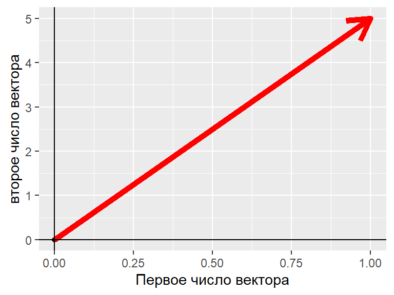
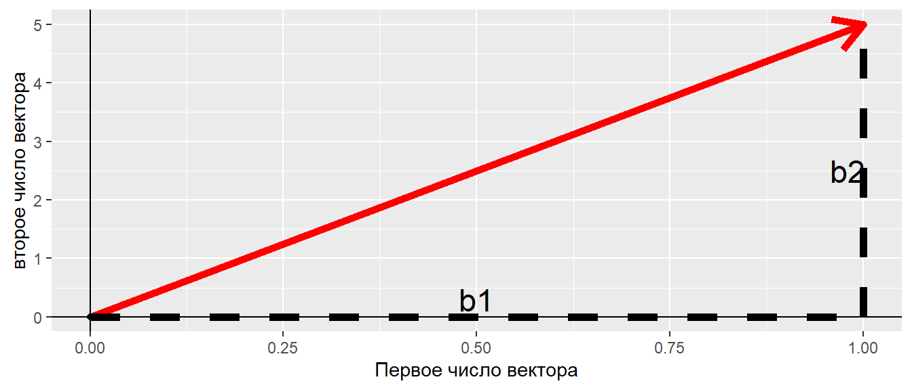
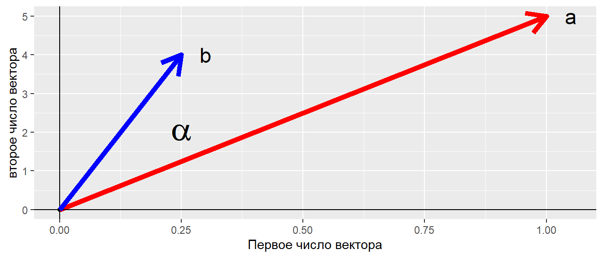
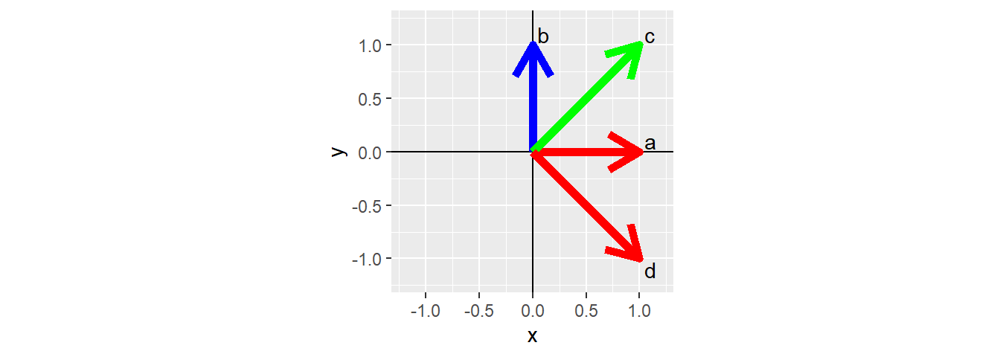
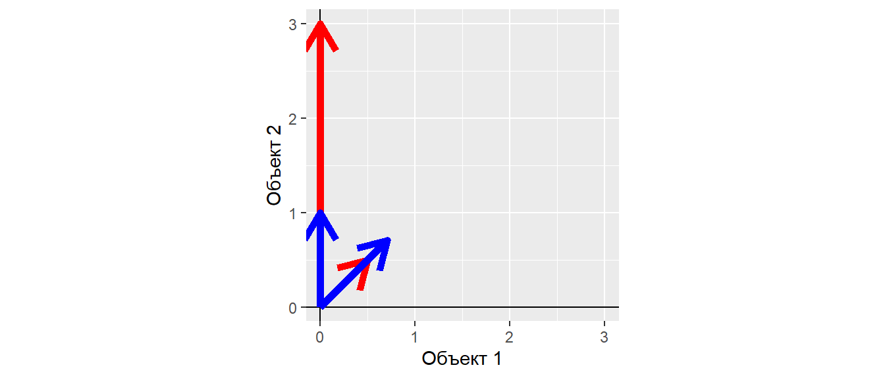
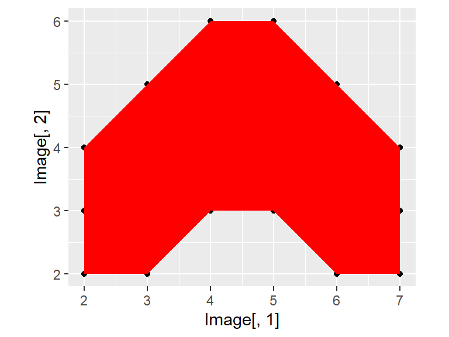
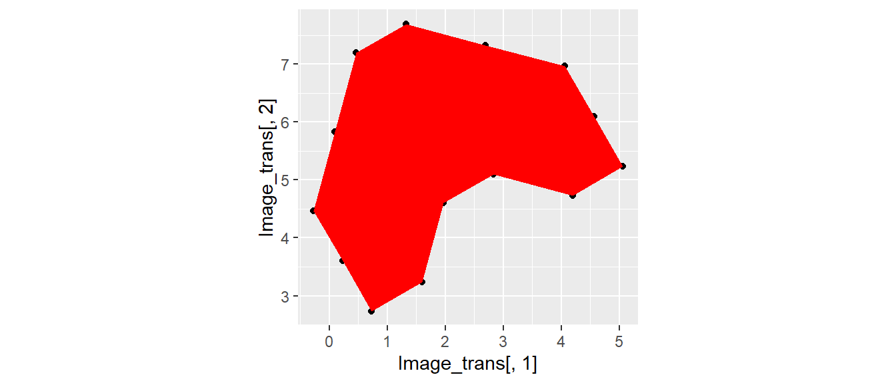
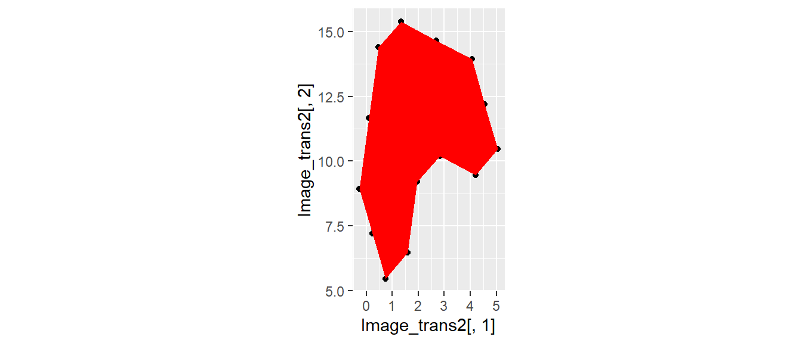

- Объяснить что такое матрицы и какие бывают их основные разновидности
- Выполнить базовые операции с матрицами с использованием функций R
- Применить в среде R методы линейной алгебры для решения простейших задач
Вы сможете
Level 1: Немного повторения: Зоопарк матричных объектов
Матричные объекты
- Есть много типов объектов, для которых такое выражение оказывается наиболее естественным (изображения, описания многомерных объектов и т.д.)
- В матрицах, как и в обычных числах, скрыта информация, которую можно извлекать и преобразовывать по определенным правилам
Структура матриц
\[\begin{pmatrix} a_{11} & a_{12} & \cdots & a_{1c} \\ a_{21} & a_{22} & \cdots & a_{2c} \\ \vdots & \vdots & \ddots & \vdots \\ a_{r1} & a_{r2} & \cdots & a_{rc} \end{pmatrix} \]
Размер (порядок) матрицы \(r \times c\)
Разновидности матриц
\[ \textbf {a} = \begin{pmatrix} 1 & 2 & 3 \end{pmatrix} \] Вектор-строка (Row matrix)
\[ \textbf {b} = \begin{pmatrix} 1 \\ 4 \\ 7 \\ 10 \end{pmatrix} \] Вектор-столбец (column matrix)
Разновидности матриц
\[ \textbf {C} = \begin{pmatrix} 1 & 2 & 3 \\ 4 & 5 & 6 \\ 7 & 8 & 9 \\ 10 & 11 & 12 \end{pmatrix} \]
\[ \textbf {D} = \begin{pmatrix} 1 & 2 & 3 \\ 4 & 5 & 6 \end{pmatrix} \]
Прямоугольные матрицы (rectangular matrices)
В таком виде обычно представляются исходные данные при многомерном анализе.
В такой матрице столбцы - признаки (p), а строки - объекты (n).
Лучше, когда n > p, то есть когда объектов больше, чем признаков.
Квадратные матрицы (square matrices)
Это наиболее “операбельные” матрицы
\[ \textbf {E} = \begin{pmatrix} 1 & 2 & 3 \\ 4 & 5 & 6 \\ 7 & 8 & 9 \end{pmatrix} \]
Диагональные матрицы (diagonal matrix)
\[ \textbf {F} = \begin{pmatrix} 1 & 0 & 0 & 0 \\ 0 & 5 & 0 & 0 \\ 0 & 0 & 9 & 0 \\ 0 & 0 & 0 & 1 \end{pmatrix} \]
Квадратные матрицы (square matrices)
Треугольные матрицы (triangular matrices)
\[ \textbf {H} = \begin{pmatrix} 1 & 2 & 3 & 4 \\ 0 & 5 & 6 & 7 \\ 0 & 0 & 9 & 10 \\ 0 & 0 & 0 & 1 \end{pmatrix} \]
или
\[ \textbf {H} = \begin{pmatrix} 1 & 0 & 0 & 0 \\ 3 & 5 & 0 & 0 \\ 4 & 7 & 9 & 0 \\ 5 & 8 & 10 & 11 \end{pmatrix} \]
Квадратные матрицы (square matrices)
Единичная матрица (identity matrix)
\[ \textbf {I} = \begin{pmatrix} 1 & 0 & 0 & 0 \\ 0 & 1 & 0 & 0 \\ 0 & 0 & 1 & 0 \\ 0 & 0 & 0 & 1 \end{pmatrix} \]
Единичная матрица (обозначение \(\textbf{I}\)) занимают особое место в матричной алгебре.
Она выполняет ту же роль, которую выполняет единица в обычной алгебре.
Матрицы ассоциации
Изначально результаты исследования имеют вид исходной матрицы (обычно прямоугольной)
\[ \textbf{Y} = [n_{objects} \times p_{descriptors}] \]
Информация из этой матрицы конденсируется в двух других матрицах
Q анализ
\[ \textbf{A}_{nn} = [n_{objects} \times n_{objects}] \]
R анализ
\[ \textbf{A}_{pp} = [p_{descriptors} \times p_{descriptors}] \]
Матрицы ассоциации
Это симметричные квадратные матрицы
\[ \textbf{A}_{pp} = \begin{pmatrix} a_{11} & a_{12} & \cdots & a_{1p} \\ a_{21} & a_{22} & \cdots & a_{2p} \\ \vdots & \vdots & \ddots & \vdots \\ a_{p1} & a_{p2} & \cdots & a_{pp} \end{pmatrix} \]
В этой матрице \(a_{ij} = a_{ji}\)
Большинство многомерных методов имеет дело именно с такими матрицами
Особенность квадратных матриц
Для квадратных матриц могут быть найдены (но не обязательно существуют) некоторые важные для линейной алгебры показатели: определитель, инверсия, собственные значения и собственные векторы
Задание
Создайте с помощью R следующие матрицы
## [,1] [,2] [,3] ## [1,] 1 5 9 ## [2,] 2 6 10 ## [3,] 3 7 11 ## [4,] 4 8 12
## [,1] [,2] [,3] [,4] [,5] ## [1,] 1 0 0 0 0 ## [2,] 0 2 0 0 0 ## [3,] 0 0 3 0 0 ## [4,] 0 0 0 4 0 ## [5,] 0 0 0 0 5
Level 2: Еще немного повторения: Простейшие операции с матричными объектами
Транспонирование матриц
A <- matrix(1:12, ncol = 3) A
## [,1] [,2] [,3] ## [1,] 1 5 9 ## [2,] 2 6 10 ## [3,] 3 7 11 ## [4,] 4 8 12
Транспонированная матрица \(\textbf{B} = \textbf{A}'\) синонимичная запись \(\textbf{B} = \textbf{A}^{T}\)
B <- t(A) B
## [,1] [,2] [,3] [,4] ## [1,] 1 2 3 4 ## [2,] 5 6 7 8 ## [3,] 9 10 11 12
Сложение матриц
A + 4
## [,1] [,2] [,3] ## [1,] 5 9 13 ## [2,] 6 10 14 ## [3,] 7 11 15 ## [4,] 8 12 16
A + A
## [,1] [,2] [,3] ## [1,] 2 10 18 ## [2,] 4 12 20 ## [3,] 6 14 22 ## [4,] 8 16 24
Но! Нельзя складывать матрицы разных размеров
A + B
Простое умножение
Умножение на число
A * 4
## [,1] [,2] [,3] ## [1,] 4 20 36 ## [2,] 8 24 40 ## [3,] 12 28 44 ## [4,] 16 32 48
Простое умножение матрицы на вектор возможно только если число элементов в векторе равно числу строк в матрице
A * c(10, 11, 12, 13)
## [,1] [,2] [,3] ## [1,] 10 50 90 ## [2,] 22 66 110 ## [3,] 36 84 132 ## [4,] 52 104 156
Все элементы первой строки матрицы умножаются на первый элемент вектора, все элементы второй строки на второй элемент вектора и т.д.
Level 3: Векторы и их геометрическая интерпретация
Вектор в языке R
Мы уже привыкли, что в языке R все основано на векторных операциях.
Вектор – это последовательность чисел: \((x_1, x_2, ..., x_n)\).
Примеры векторов
seq(1, 10, 2)
## [1] 1 3 5 7 9
rnorm(10, 0, 1)
## [1] -0.5738 0.1819 1.7556 -0.0135 1.2913 -1.3955 0.0167 -2.1227 ## [9] -1.3702 -0.1505
НО! Почему одно число тоже вектор?
runif(1)
## [1] 0.618
Почему одно число - это тоже вектор?
У матричных объектов есть геометрическая интерпретация.
Пусть у нас есть одно единственное число, например, “10”.
Его можно представить, как точку на числовой оси.

Но! Это же самое число можно представить в виде вектора, направленного отрезка, идущего от точки “0” к точке “10”

Интерпретация вектора
Геометрической интерпретацией вектора является направленный отрезок в n-мерном пространстве с началом в точке \((0, 0 .... 0)\).
Если в векторе всего два числа, то это направленный отрезок на плоскости.
Пример: vec = (1, 5)

Длина вектора, геометрическая итерпретаця

По теореме Пифагора
\[ R = \sqrt{b_1^2 + b_2^2} \]
Длина вектора в матричной алгебре
Пусть есть вектор: \(\textbf{b} = b_1, b_2, \dots, b_n\)
Длина вектора, или норма вектора
\[ ||\textbf{b}|| = \sqrt{b_1^2 + b_2^2 + \dots + b_n^2} \]
Длина вектора
Vec <- 1:5 sqrt(sum(Vec^2))
## [1] 7.42
norm(t(Vec), type = "F") #Аналогчное решение
## [1] 7.42
Скалярное произведение векторов
Допустимо только для векторов одинаковой размерности
\[ \textbf{a} \cdot \textbf{b} = \begin{pmatrix} a_1 \\ a_3 \\ a_4 \\ a_5 \\ a_6 \\ a_7 \end{pmatrix} \times \begin{pmatrix} b_1 & b_3 & b_4 & b_5 & b_6 & b_7 \end{pmatrix} = a_1b_1 + a_2b_2 + ... + a_7b_7 = x \]
Это базовая операция для истинного матричного умножения.
Результат этой операции - число (скаляр)
Как это работает?
Бытовой пример
В доме есть следующие электроприборы.
| Электроприбор | Количество | Мощность (Вт) |
|---|---|---|
| Чайник | 2 шт | 1200 |
| Обогреватели | 3 шт. | 1300 |
| Осушитель | 1 шт. | 1100 |
| Стиральная машина | 1 шт. | 1500 |
| Фен | 2 шт. | 800 |
Вопрос: Какова будет суммарная мощность всех электроприборов, если их включить одновременно?
Решение
a <- c(2, 3, 1, 1, 2) b <- c(1200, 1300, 1100, 1500, 800) a %*% b
## [,1] ## [1,] 10500
Геометрическая интерпретация скалярного произведения векторов
Скалярное произведение равно произведению длин векторов на \(cos\) угла между ними
\[ \textbf{a} \cdot \textbf{b} = ||\textbf{a}|| \times ||\textbf{b}|| \times \cos(\alpha) \]
Пусть у нас есть два вектора: \(\textbf{a} = 1, 5\) и \(\textbf{b} = 0.25, 4\)

Ортогониальные векторы
Если угол между векторами равен 90 градусов, то такие векторы называются ортогональными.
У таких векторов скалярное произведение \(\textbf{a} \cdot \textbf{b} = 0\)
Задание
Выясните, являются ли ортогональными следующие векторы?
a <- c(0, 1) b <- c(1, 0) c <- c(1, 1) d <- c(1, -1)
Решение
Аналитическое решение
(a) %*% (b) #Ортогональны
## [,1] ## [1,] 0
(c) %*% (a) #Неортогональны
## [,1] ## [1,] 1
(c) %*% (b) #Неортогональны
## [,1] ## [1,] 1
(d) %*% (c) #Ортогональны
## [,1] ## [1,] 0
(c) %*% (a) #неортогональны
## [,1] ## [1,] 1
(b) %*% (d) #неортогональны
## [,1] ## [1,] 1
Геометрическое решение 
Угол между векторами
Пусть, векторы отражают признаки объектов.
Что характеризует угол между векторами?
## Object1 Object2 ## Tr1 0.5 0.5 ## Tr2 0.0 3.0

Угол между векторами
Длина векторов
norm(t(Dat[ ,1 ]), type = "F") #Длина вектора Tr1
## [1] 0.707
norm(t(Dat[ , 2]), type = "F") #Длина вектора Tr2
## [1] 3
Угол между векторами
Если
\[ \textbf{a} \cdot \textbf{b} = ||\textbf{a}|| \times ||\textbf{b}|| \times \cos(\alpha) \]
то
\[ \cos(\alpha) = \frac{\textbf{a} \cdot \textbf{b}} {||\textbf{a}|| \times ||\textbf{b}||} \]
cos_a <- (Dat[, 1] %*% Dat[, 2])/(norm(t(Dat[, 1]), type = "F") *
norm(t(Dat[, 2]), type = "F"))
cos_a
## [,1] ## [1,] 0.707
Угол между векторами - мера сонаправленности векторов…
Интерпретация угла между векторами

\[ \cos(\alpha) = \frac{\textbf{a} \cdot \textbf{b}}{||\textbf{a}|| \times ||\textbf{b}||} = ? \]
vec_a <- c(1, 5) vec_b <- c(0.25, 4) cos_alpha <- vec_a %*% vec_b / (norm(t(vec_a), type = "F") * norm(t(vec_b), type = "F")) cos_alpha
## [,1] ## [1,] 0.991
Интерпретация угла между векторами

\[ \cos(\alpha) = \frac{\textbf{a} \cdot \textbf{b}}{||\textbf{a}|| \times ||\textbf{b}||} = \frac{a_x \cdot b_x+a_y \cdot b_y}{\sqrt {a_x^2 + a_y^2} \times \sqrt {b_x^2 + b_y^2}} \]
Интерпретация угла между векторами
Если вектор трехмерный
\[ \cos(\alpha) = \frac{\textbf{a} \cdot \textbf{b}}{||\textbf{a}|| \times ||\textbf{b}||} = \frac{a_x \cdot b_x + a_y \cdot b_y + a_z \cdot b_z } {\sqrt {a_x^2 + a_y^2 + a_z^2} \times \sqrt {b_x^2 + b_y^2 + b_z^2}} \]
Интерпретация угла между векторами
Если вектор n-мерный
\[ \cos(\alpha) = \frac{\textbf{a} \cdot \textbf{b}}{||\textbf{a}|| \times ||\textbf{b}||} = \frac{\Sigma{(a_i\cdot b_i)}} {\sqrt {\Sigma{a_i^2}} \times \sqrt {\Sigma{b_i^2}}} \] Ничего не напоминает?
Интерпретация угла между векторами
За точку отсчета взято начало координат, т.е. точка с координатами \(0, 0, \dots, 0\), тогда
\[ \cos(\alpha) = \frac{\textbf{a} \cdot \textbf{b}}{||\textbf{a}|| \times ||\textbf{b}||} = \frac{\Sigma{((a_i-0)\cdot (b_i - 0))}} {\sqrt {\Sigma{(a_i-0)^2}} \times \sqrt {\Sigma{(b_i-0)^2}}} \] Ничего не напоминает?
Интерпретация угла между векторами
\[ r_{x,y} = \frac{\sum(x_i-\bar{x})(y_i-\bar{y})} {\sqrt{\sum(x_i-\bar{x})^2}\sqrt{\sum(y_i-\bar{y})^2}} = \frac{cov_{x,y}} {\sigma_x \sigma_y} \]
Ключевая разница - это наличие вот этих элементов в формуле: \(x_i-\bar{x}\) и \(y_i-\bar{y}\)
Как называется действие, которое описывается такими формулами?
Интерпретация угла между векторами
\[ r_{x,y} = \frac{\sum(x_i-\bar{x})(y_i-\bar{y})} {\sqrt{\sum(x_i-\bar{x})^2}\sqrt{\sum(y_i-\bar{y})^2}} = \frac{cov_{x,y}} {\sigma_x \sigma_y} \]
Ключевая разница - это наличие вот этих элементов в формуле: \(x_i-\bar{x}\) и \(y_i-\bar{y}\)
Как называется действие, которое описывается такими формулами?
Это центрирование! Перевод начала координат в точку с координатами равными средним значениям векторов. Такая точка называется центроидом.
Вычисление косинуса угла между векторами
vectors <- data.frame(a = c(1, 5), b = c(0.25, 4), c = c(-3, 0)) vectors
## a b c ## 1 1 0.25 -3 ## 2 5 4.00 0

with(vectors, a %*% b/(norm(t(a), type = "F") * norm(t(b), type = "F")) )
## [,1] ## [1,] 0.991
with(vectors, a %*% c/(norm(t(a), type = "F") * norm(t(c), type = "F")) )
## [,1] ## [1,] -0.196
with(vectors, b %*% c/(norm(t(b), type = "F") * norm(t(c), type = "F")) )
## [,1] ## [1,] -0.0624
Коэффициент корреляции и косинус угла между векторами
Пусть есть два вектора в 100-мерном пространстве
set.seed(12345) vec_1 <- rnorm(100, 10, 1) vec_2 <- -10*vec_1 + 10 + rnorm(100, 0, 10)
Коэффициент корреляции
cor(vec_1, vec_2)
## [1] -0.708
Косинус угла в 100-мерном пространстве
# Центрированные векторы
vec_1_c <- as.vector(scale(vec_1,
center = T, scale = F))
vec_2_c <- as.vector(scale(vec_2,
center = T, scale = F))
cos_alpha <- (vec_1_c %*% vec_2_c)/
(norm(t(vec_1_c), type = "F")*
norm(t(vec_2_c), type = "F"))
cos_alpha
## [,1] ## [1,] -0.708
Нормализованные векторы
Для многомерных методов важны взаимоотношения векторов, а не их истинные длины.
Для приведения векторов к соизмеримости проводят их нормализацию.
\[ \textbf{c} = \frac{\textbf{b}} {||\textbf{b}||} \]
Задание
Найдите нормализованный вектор для следующего вектора и определите его длину
Vec <- 1:5 Vec
## [1] 1 2 3 4 5
Решение
normalized_Vec <- Vec/norm(t(Vec), type = "F") normalized_Vec
## [1] 0.135 0.270 0.405 0.539 0.674
Длина нормализованного вектора
norm(t(normalized_Vec), type = "F")
## [1] 1
- Длина нормализованного вектора равна 1. Это важное свойство для многомерных методов.
Нормализованные векторы
Исходные данные
## Object1 Object2 ## Tr1 0.5 0.5 ## Tr2 0.0 3.0
Нормализованные данные
## Object1 Object2 ## Tr1 0.707 0.707 ## Tr2 0.000 1.000

Характер взаимосвязи между нормализованными векторами такой же, как и у исходных векторов.
После нормализации, можно пренебречь разницами длин векторов.
Level 4: Еще немного повторения: Операции с матрицами
Матричное умножение матрицы на вектор
\[ \mathbf{A} \times \mathbf{a} \]
Умножать можно только в том случае, если число столбцов в матрице равно количеству чисел в векторе.
Пусть, есть матрица \(\mathbf{A}\)
## [,1] [,2] [,3] ## [1,] 1 5 9 ## [2,] 2 6 10 ## [3,] 3 7 11 ## [4,] 4 8 12
A %*% c(10, 10, 10)
## [,1] ## [1,] 150 ## [2,] 180 ## [3,] 210 ## [4,] 240
- Первое число итогового вектора - скалярное произведение первой строки \(\mathbf{A}\) на вектор \(\mathbf{a}\)
- Второе число - скалярное произведение второй строки \(\mathbf{A}\) на вектор \(\mathbf{a}\)
и т.д.
Но! если поменять местами множители, то будет ошибка
c(10, 10, 10) %*% A
## Error in c(10, 10, 10) %*% A: неподобные аргументы
Матричное умножение вектора на матрицу
\[ \mathbf{a} \times \mathbf{A} \]
Умножать можно только в том случае, если количество чисел в векторе равно количеству строк в матрице.
c(10, 10, 10, 10) %*% A
## [,1] [,2] [,3] ## [1,] 100 260 420
Но! если поменять местами множители, то будет ошибка
A %*% c(10, 10, 10, 10)
## Error in A %*% c(10, 10, 10, 10): неподобные аргументы
Умножение матриц
Умножать можно только в том случае, если число колонок в первой матрице равно числу строк второй матрицы: \(\mathbf{A} \times \mathbf{B}\)
Пусть, есть матрица \(\mathbf{A}\)
## [,1] [,2] [,3] ## [1,] 1 5 9 ## [2,] 2 6 10 ## [3,] 3 7 11 ## [4,] 4 8 12
и матрица \(\mathbf{B}\)
## [,1] [,2] [,3] [,4] ## [1,] 1 2 3 4 ## [2,] 5 6 7 8 ## [3,] 9 10 11 12
A %*% B
## [,1] [,2] [,3] [,4] ## [1,] 107 122 137 152 ## [2,] 122 140 158 176 ## [3,] 137 158 179 200 ## [4,] 152 176 200 224
НО! Нельзя произвести такое умножение
A %*% A
## Error in A %*% A: неподобные аргументы
Схема умножения матриц
\[ \begin{pmatrix} A & B \\ C & D \\ \end{pmatrix} \times \begin{pmatrix} E & F \\ G & H\\ \end{pmatrix} = \begin{pmatrix} (A \cdot E + B \cdot G) & (A \cdot F + B \cdot H ) \\ (C \cdot E + D \cdot G) & (C \cdot F + D \cdot H) \\ \end{pmatrix} \]
Level 5.Матрицы, как инструмент преобразования
Геометрическая интерпретация матрицы
Вектор это направленный n-мерный отрезок.
y = c(2,2,3,3,2,2,3,4,5,6,6,5,4,3,2) x = c(2,3,4,5,6,7,7,7,6,5,4,3,2,2,2)
Матрица - это система векторов
cbind((x), (y))
## [,1] [,2] ## [1,] 2 2 ## [2,] 3 2 ## [3,] 4 3 ## [4,] 5 3 ## [5,] 6 2 ## [6,] 7 2 ## [7,] 7 3 ## [8,] 7 4 ## [9,] 6 5 ## [10,] 5 6 ## [11,] 4 6 ## [12,] 3 5 ## [13,] 2 4 ## [14,] 2 3 ## [15,] 2 2
Два сцепленных 15-мерных вектора
и/или
15 сцепленных двумерных векторов.
Геометрическая интерпретация матрицы
Интерпретация матрицы, вариант 1
Matr <- as.data.frame(t(cbind((x), (y)))) Matr
## V1 V2 V3 V4 V5 V6 V7 V8 V9 V10 V11 V12 V13 V14 V15 ## 1 2 3 4 5 6 7 7 7 6 5 4 3 2 2 2 ## 2 2 2 3 3 2 2 3 4 5 6 6 5 4 3 2
Два вектора в 15-ти мерном пространстве
Изобразить на плоскости невозможно!
Геометрическая интерпретация матрицы
Интерпретация матрицы, вариант 2
Image <- cbind((x), (y)) Image
## [,1] [,2] ## [1,] 2 2 ## [2,] 3 2 ## [3,] 4 3 ## [4,] 5 3 ## [5,] 6 2 ## [6,] 7 2 ## [7,] 7 3 ## [8,] 7 4 ## [9,] 6 5 ## [10,] 5 6 ## [11,] 4 6 ## [12,] 3 5 ## [13,] 2 4 ## [14,] 2 3 ## [15,] 2 2
15 векторов в двумерном пространстве

Геометрическая интерпретация матрицы
Интерпретация матрицы, вариант 2
Аналогичное изображение
qplot(Image[,1], Image[,2] ) + geom_polygon(fill = "red") + coord_fixed()

Матрицы позволяют преобразовывать системы векторов
Вращающая матрица \[ \textbf{Rot} = \begin{pmatrix} \cos\phi & -\sin \phi \\ \sin\phi & \cos\phi \end{pmatrix} \]
Поворот изображения на заданный угол
\[ \textbf{Y}_{rot} = \textbf{Rot} \times \textbf{Y} \]
phi <- 30 # Угол в градусах,
# на который надо повернуть объект
angle <- phi*pi/180 # Угол в радианах
# Вращающая матрица
Rot <- matrix(c(cos(angle), sin(angle),
-sin(angle), cos(angle)), nrow = 2)
# Перобразованние исходной матрицы
# с помощью вращающей матрицы
Image_trans <- t((Rot) %*% t(Image))
qplot(Image_trans[,1], Image_trans[,2] ) +
geom_polygon(fill = "red") +
coord_fixed()

Матрицы позволяют преобразовывать системы векторов
Масштабирующая матрица \[ \textbf{Scale} = \begin{pmatrix} a & 0 \\ 0 & b \end{pmatrix} \]
\[ \textbf{Y}_{scaled} = \textbf{Scale} \times \textbf{Y} \]
Scale <- matrix(c(1, 0, 0, 2), nrow = 2) Image_trans2 <- t((Scale) %*% t(Image_trans)) qplot(Image_trans2[,1], Image_trans2[,2] ) + geom_polygon(fill = "red") + coord_fixed()

Применение вращения и масштабирования матричных обектов
- Многомерные анализы (о некоторых приемах речь впереди)
- Работа с изображениями
Level 6: Корреляционные и ковариационные матрицы
Ковариационная матрица
Во многих методах многомерной статистики применяется матрица ковариации.
Ковариация (согласованное отклонение от среднего):
\[ cov(X, Y) = \frac{1}{n - 1}\sum{(x_i - \bar{x})(y_i - \bar{y})} \]

Ковариационная матрица
\[ \textbf{S} = \frac{1}{n - 1} \textbf{Y}_{centered}'\textbf{Y}_{centered} \]
где \(\textbf{Y}_{centered}\) - центрированная матрица исходных значений
Центрирование - перемещение начала координат в точку с координатами, равными средним значениям (центроид)
Корреляционая матрица
То же самое, что ковариационная матрица, но только на основе стандартизованных исходных значений
\[ \textbf{R} = \frac{1}{n - 1} \textbf{Y}_{stand}'\textbf{Y}_{stand} \]
Вычисление матрицы ковариации с помощью линейной алгебры
Исходная матрица
M <- matrix(c(1,2,3,4,5,5,2,1,2,5,2,1,3,5,4,6,8,4,0,2), ncol = 4) M
## [,1] [,2] [,3] [,4] ## [1,] 1 5 2 6 ## [2,] 2 2 1 8 ## [3,] 3 1 3 4 ## [4,] 4 2 5 0 ## [5,] 5 5 4 2
Матрица центрированных значений
Cent_M <- scale(M, center = TRUE, scale = FALSE) Cent_M
## [,1] [,2] [,3] [,4] ## [1,] -2 2 -1 2 ## [2,] -1 -1 -2 4 ## [3,] 0 -2 0 0 ## [4,] 1 -1 2 -4 ## [5,] 2 2 1 -2 ## attr(,"scaled:center") ## [1] 3 3 3 4
Вычисление матрицы ковариации с помощью линейной алгебры
Задание:
Вычислите ковариационную матрицу с помощью методов линейной алгебры и сравните ее с матрицей, полученной с помощью функции cov()
Вычисление матрицы ковариации с помощью линейной алгебры
Решение:
# Вычисление вручную Cov_M <- (t(Cent_M) %*% Cent_M)/(nrow(M) - 1) Cov_M
## [,1] [,2] [,3] [,4] ## [1,] 2.5 0.0 2.0 -4 ## [2,] 0.0 3.5 0.0 0 ## [3,] 2.0 0.0 2.5 -5 ## [4,] -4.0 0.0 -5.0 10
cov(M) # Стандартная функция R
## [,1] [,2] [,3] [,4] ## [1,] 2.5 0.0 2.0 -4 ## [2,] 0.0 3.5 0.0 0 ## [3,] 2.0 0.0 2.5 -5 ## [4,] -4.0 0.0 -5.0 10
Вычисление матрицы ковариации с помощью линейной алгебры
По главной диагонали ковариационной матрицы лежат квадраты стандартных отклонений каждого из векторов (колонок, признаков) исходной матрицы
diag(Cov_M)
## [1] 2.5 3.5 2.5 10.0
Сравним
apply(M, 2, FUN = function(x)sd(x)^2)
## [1] 2.5 3.5 2.5 10.0
Вычисление матрицы корреляций с помощью линейной алгебры
Для вычисления матрицы корреляций необходимо стандартизировать значения в исходной матрице
Stand_M <- scale(M, center = TRUE, scale = TRUE) Stand_M
## [,1] [,2] [,3] [,4] ## [1,] -1.265 1.069 -0.632 0.632 ## [2,] -0.632 -0.535 -1.265 1.265 ## [3,] 0.000 -1.069 0.000 0.000 ## [4,] 0.632 -0.535 1.265 -1.265 ## [5,] 1.265 1.069 0.632 -0.632 ## attr(,"scaled:center") ## [1] 3 3 3 4 ## attr(,"scaled:scale") ## [1] 1.58 1.87 1.58 3.16
# Вычисление вручную Cor_M <- (t(Stand_M) %*% Stand_M)/(nrow(M) - 1) Cor_M
## [,1] [,2] [,3] [,4] ## [1,] 1.0 0 0.8 -0.8 ## [2,] 0.0 1 0.0 0.0 ## [3,] 0.8 0 1.0 -1.0 ## [4,] -0.8 0 -1.0 1.0
cor(M) # Стандартная функция R
## [,1] [,2] [,3] [,4] ## [1,] 1.0 0 0.8 -0.8 ## [2,] 0.0 1 0.0 0.0 ## [3,] 0.8 0 1.0 -1.0 ## [4,] -0.8 0 -1.0 1.0
Зачем нужна ковариационная матрица?
В ковариационной матрице содержится вся информация о варьировании признаков и о их взаимосвязи
Свойства этой матрицы позволяют раскладывать изменчивость на отдельные составляющие (про это у нас будет специальная лекция).
Level 7: Еще немного повторения: Обращение (инверсия) матриц
Обращение (инверсия) матриц
В линейной алгебре нет процедуры деления. Вместо нее используют обращение матриц.
\[ \textbf{X}^{-1}\textbf{X} = \textbf{I} \]
Обратить можно только такую матрицу, у которой определитель не равен нулю \[|\textbf{X}| \ne 0\]
Матрицы, у которых определитель \(|\textbf{X}| = 0\) называются сингулярными матрицами они не могут быть инвертированы.
Важно!: Только квадратные матрицы имеют обратную матрицу.
Для квадратных матриц справедливо \(\textbf{X} \textbf{X}^{-1} = \textbf{X}^{-1} \textbf{X}\)
Важное свойство: Если квадратная матрица состоит из ортогональных векторов (ортогональная матрица), то \(\textbf{X}' = \textbf{X}^{-1}\)
Вычисление обратной матрицы в среде R
Создадим матрицу
## [,1] [,2] [,3] ## [1,] 1 2 3 ## [2,] 4 5 6 ## [3,] 7 8 10
Ее определитель
det(X)
## [1] -3
Вычисление обратной матрицы в среде R
Обратная матрица
solve(X)
## [,1] [,2] [,3] ## [1,] -0.667 -1.33 1 ## [2,] -0.667 3.67 -2 ## [3,] 1.000 -2.00 1
По определению \(\textbf{X}^{-1}\textbf{X} = \textbf{I}\)
round(solve(X) %*% X )
## [,1] [,2] [,3] ## [1,] 1 0 0 ## [2,] 0 1 0 ## [3,] 0 0 1
Summary
- Линейная алгебра позволяет решать самые разные типы задач.
- Матричные методы лежат в основе очень многих типов анализа и служат для решения прикладных задач.
Что почитать
- Legendre P., Legendre L. (2012) Numerical ecology. Second english edition. Elsevier, Amsterdam. Глава 2. Matrix algebra: a summary.
Not The End